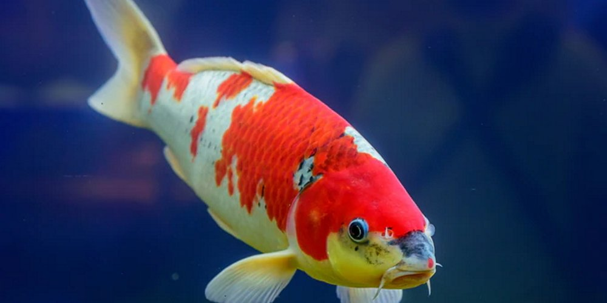

INFORMACION RELEVANTE SOBRE ALGUNAS ESPECIES DE PECES DOMESTICOS
CUIDADOS
A continuacion te mostrarenos algunos de los peces domesticos más comunes
PEZ BETA
Los peces Betta, conocidos también como “luchadores de Siam” o peces combatientes, son unos peces de 6-7 cm procedentes de Indonesia.
Los machos son muy territoriales y bastante agresivos entre sí.
no se pueden poner dos machos en una misma pecera porque comienzan a morderse y destruyen.
Las hembras también son territoriales, pero sus peleas son más leves y en general no se dañan unas a otras.
Cuando las condiciones del agua son adecuadas, se les ve activos y juguetones.
si se mueven lentamente significa que están estresados o enfermos.
Los Betta son peces muy populares porque son bonitos, bastante económicos y fáciles de cuidar incluso para principiantes.
Necesitan un agua templada, entre 26 y 29ºC.
La esperanza de vida de los Betta es de 2 a 3 años, pero vivirán mucho menos si las condiciones del acuario no son adecuadas.
Una ventaja del pez BETTA es que no es necesitan tener una bomba de agua para su habitad
PEZ DORADO
De origen asiático, concretamente Chino, el pez dorado o goldfish,
pertenece a la familia Cyprinidae, más conocida como ciprínidos o vulgarmente como carpas.
El goldfish es un pez muy resistente que soporta temperaturas muy diversas prefiriendo siempre las templadas.
soportar un mínimo de 10ºC y un máximo de 32ºC.
El pez dorado está clasificado como pez de agua fría.
Los goldfish si necesitan bomba de agua.
Puede crecer hasta 1.5 metros de longitud y pesar y pesar 40 kilogramos.
E l pez dorado puede vivir aproximadamente 4 a 5 años si es cuidado adecuadamente.
Es un depredador carnívoro al alimentarse de peces mas pequeños, crustáceos o calamares
PEZ CEBRA
El Pez Cebra, una especie fascinante que habita en ríos y arroyos de América Central y del Sur.
Este pequeño pez de colores vivos es popular en acuarios gracias a su comportamiento social y fácil mantenimiento.El pez cebra es originario de Asia, específicamente de la India y Bangladesh, pero es comúnmente utilizado como pez de laboratorio y mascota en todo el mundo.
El pez cebra es una especie pequeña pero llamativa, con un cuerpo alargado y una aleta dorsal que se extiende hasta la cola.
Respecto a su reproducción, esta especie es ovípara, y las hembras pueden poner hasta 200 huevos en pequeñas plantas acuáticas. Los huevos eclosionan después de 2 o 3 días, y los alevines pueden alimentarse con pequeños crustáceos y algas.
El tamaño máximo de los peces cebra es de 6 cm, aunque en cautiverio pueden crecer hasta 4 cm.
El pez cebra si necesita bomba de agua.

Pez koi
Tradicionalmente se señala que el desarrollo original de las carpas koi pudo haber ocurrido en China
Los peces koi pueden llegar a tener un gran tamaño, alcanzando a medir 1 metro de largo, o en casos excepcionales hasta 2 metros de largo; a medida que van creciendo pueden llegar a pesar entre 10 y 45 kilos,
dependiendo de la etapa en que se encuentre.El pez koi vive aproximadamente 30 años de edad; aunque algunos de sus ejemplares han existido por décadas y han logrado vivir hasta 65 años de edad.
Muchas personas los crían como mascotas, sobre todo en el continente asiático, ya que estos peces vertebrados pueden llegar a ser muy amistosos y cariñosos; hasta reconocen a sus dueños, si tienen un tiempo con ellos.
Cuando son peces domésticos, es importante incluir en su dieta variadas papillas y vegetales; las cuales les darás intercalando de manera apropiada y en forma alterna, para evitar que se enfermen.
PEZ GUPPY
El guppy, lebistes o pez millón (Poecilia reticulata) es un pez ovovivíparo de agua dulce procedente de Sudamérica que habita en zonas de corriente baja de ríos, lagos y charcas. Es muy conocido en el mundo de la acuariofilia puesto que su cuidado no ofrece grandes dificultades y se reproduce con muchísima facilidad.
Los guppys son peces de agua templada y se recomienda criarlos en temperaturas entre los 22 °C y 28 °C (óptima: 24-26 °C).
El mantenimiento de estos peces requiere agua de un pH ligeramente alcalino, no debería ser inferior a 7 ni superior a 8.
Se recomienda no superar la cantidad de 1 guppy por cada 5 litros.
Estos peces se alimentan de todo, principalmente de alimentos ricos en proteínas.
Los machos adultos miden alrededor de 4 centímetros. Las hembras son siempre más grandes, pueden llegar a medir 7 centímetros.
Es “portador de vida” por su capacidad de reproducción abundante.
...